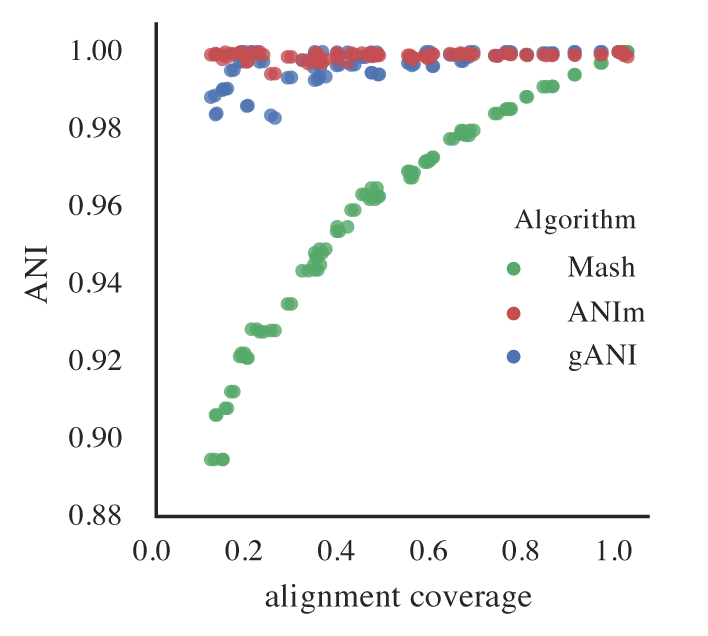

Choosing parameters¶
The values used during de-replication (and simply genome comparison) are critical to understanding what exactly the program is doing to your genome set.
For a more general description of routine parameters, see :doc:`module_descriptions`
There are two critical high-level decisions you must make before running dRep to de-replicate a genome set:
1. How similar do genomes need to be for them to be the “same”?
2. What is the minimum genome completeness allowed in analysis?
What defines genomes as being “same”?¶
There is no standard definition of the average nucleotide identity (ANI) shared between two genomes that are the “same”. How dRep determines this is primarily impacted by the secondary clustering algorithm, the minimum secondary ANI, and the minimum aligned fraction.
The **secondary clustering algorithm* is the program that will calculate the accurate Average Nucleotide Identity (ANI) between genomes. The current options supported by dRep are ANIm (link to publication) and gANI (link to publication). ANIm aligns whole genome fragments and calculates the nucleotide identity of aligned regions, and gANI aligns only the ORFs called by prodigal. Neither of these algorithms are perfect, especially in repeat-prone genomes, as regions of the genome which are not homologous can align to each other. In fact, when a genome is compared to itself, ANIm often reports values <100% for this very reason. gANI is better about this, but there still exists an undefined “limit of detection”. See Figure 1A of the publication for more.
The minimum secondary ANI is the minimum ANI between genomes from them to be considered the “same”. For context, genomes of the same species typically are ~96.5% ANI (reference). The default value is 99%. Preliminary testing suggests that with gANI, taking this up to 99.9% is probably safe, but higher than that is beyond the limit of detection. For ANIm, you really can’t go above 99%, as a comparison of a genome to itself can sometime get that low.
Keep in mind that in all cases you are collapsing closely related, but probably not identical, strains / genomes. This is simply the nature of the beast. If desired, you can compare the strains by mapping the original reads back to the de-replicated genome to visualize the strain cloud (link to Meren’s blog post), or by comparing genomes in a secondary cluster using other methods (like Mauve)
The minimum aligned fraction is the minimum amount that genomes must overlap to make the reported ANI value “count”. This value is reported as part of the ANIm/gANI algorithms. Imagine a scenario where two genomes of a separate phyla share a single transposon. When the ANIm/gANI algorithm is run, the transposon is probably the only part of the genome that aligns, and the alignment will have 100% ANI. This will result in a reported ANI of 100%, and reported aligned fraction of ~0.1%. The minimum aligned fraction is to handle the above scenario- anything with less than this amount of genome alignment will have the ANI changed to 0. Default value is 10%.
What is the minimum genome completeness allowed in analysis?¶
This decision is much more complicated than the previous. Essentially, there exists a trade-off between computational efficiency and the minimum genome completeness. The reason this trade-off exists is due to the fact that Mash ANI is artificially decreased with increasing genome incompleteness.
Remember- genomes are first divided into primary clusters using Mash, and then each primary cluster is divided into secondary clusters of the “same” genomes based on the users definition of “same” (see above). Therefore, genomes which fit the definition of “same” (as described above) must end up in the same primary cluster. As more incomplete genomes have lower Mash values (even if the genomes are truly identical), you must decrease the primary cluster threshold if you allow in more incomplete genomes, which will result in larger primary clusters, which will result in more required secondary comparisons (slow), which will result in a longer run-time. Still with me?
For example, say I set the minimum genome completeness to 50%. If I take an E. coli genome, subset it 50% 2 times, and compare those 2 subset genomes together, Mash will report an ANI of 92%. Therefore, the primary cluster threshold must be at least 92%, otherwise the two genomes could end up in different primary clusters, and thus would have have the secondary algorithm run between them, and thus would not be de-replicated.
You may be wondering why not just set the primary cluster threshold super low? This would result in more genomes being included in each primary cluster, and thus more secondary comparisons (which are slow), and thus a higher run-time.
Some general guidelines for picking genome completeness thresholds:
- Going below 50% completeness is not recommended. The resulting genome will be very crappy anyways, and even the secondary algorithms break-down at this point.
- Lowering the secondary ANI should result in a consummate lowering in MASH ANI. This is because you want Mash to group non-similar and incomplete genomes).
- To make sure clusters are not being split unnecessarily, you can run the warnings at the end. See Module Descriptions for info
The rest of the parameters¶
The most important and confusing parameters are described above. For information on the other parameters, see Module Descriptions